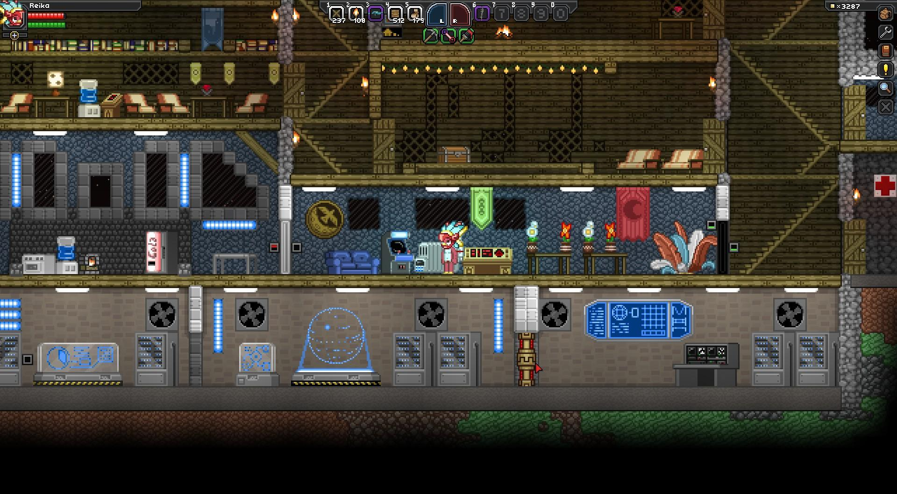

Introduction
I was first shown Starbound by a friend (the same friend who has featured in several of my "silly" MC videos, and who shared my first Factorio world) in the summer of 2015, and spent quite a significant amount of time during those few weeks playing a loosely MP game with them. I do not remember a great many details from that long ago, though I do remember the general planet progression, them helping me through the Floran mission caves, and the lack of much story beyond that point. As a result, I made a half-hearted "condos" and then grew bored of the game and moved on.

I was not good at building in Starbound, then or now.
Starting Modding
In the late summer of 2016, I was busy with significant real-life obligations at the time and could not do much more involved modding or playing in most of the other games I make content for; I was also (and relatedly) between iterations of my modded MC dev server, and thus had an opportunity to play the game through again. Since the prior year, the game had been significantly expanded - the entire modern story was now in place - and much of the modern styling and world generation was now present.During the course of this playthrough, I ended up making all of my Starbound mods, most of which are balance or gameplay tweaks to things I was annoyed with in the base game. This was helped by my having learned of the JSON patch system in the game, which allows mods to modify various definitions for things like blocks, world generation, or more.
I in fact ended up making many more mods than were ever released; among my unreleased mods were a "more powerful torches" mod, which included things like lava torches with a much greater lighting radius, and a storage expansion with custom styled lockers to use in lieu of filling my ship with shipping containers. I also created a mod with some custom creatures based on cute results I saw from the procedural creatures, with added colors or flair.

However, the conclusion of those real-world demands, and the related rise in investment in new activities - in particular Factorio modding, a new MC server, and returning to Elite:Dangerous for the first time since 2015 - as well as several successive mod-breaking Starbound game updates in the span of a few weeks, led me to abandon the game and my mods for it.
2018 Return
I did not play Starbound again until May of 2018, at the request of another friend. I played through the story again, including the new anomalies and ancient vaults, and tried another half-hearted condo, but like three years before, I got bored and moved on in fairly short order.Since then, I have not really touched the game, other than a couple weeks of play in the middle of 2020; during this time, my modding was even more sparse; I only made a couple tiny mod tweaks and fixes, plus adding a new mod to re-enable silicon board crafting since one of my existing mods broke the recipe.